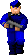
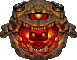

| 底下所介紹的各種族的地獄怪物皆散佈在每個地圖的某些區域，有些是成群結隊的活動有些則是單獨行動， 在適可而止的狀況下，小心地與它們戰鬥，絕對不要逞強，切記！一定要能全身而退，畢竟活著才有機會...才有機會回去毀掉它們。 |
|---|
| Former Human 人類-僵屍： 原本是政府派駐在 UAC 的陸戰隊士兵，但是受到地獄強大力量的影響而發狂發瘋，目前情報所得知的怪物它是最弱的一種， 射擊的準確度也不高，幾乎每種可用的武器都能擊斃它，擊斃後可以取得它的手槍彈匣。 |
|
| Former Human Sergeant 陸戰隊傭兵-中士班長-僵屍： 原本是政府派駐在 UAC 的陸戰隊班長，但是受到地獄強大力量的影響而發狂發瘋， 遇到它千萬別以為它跟 Former Human 一樣肉腳，目前情報所得知它手持單管散彈槍， 而且生前還受過士官訓練，所以殺傷力不容小看，所以請不要站在它們前方且長時間不動， 除非你想嚐嚐散彈槍的滋味，幾乎每種可用的武器都能擊斃它，擊斃後可以取用它的單管散彈槍。 |
|
| Former Commando 突擊戰將-僵屍： 原本是政府派駐在 UAC 的特種突擊部隊，但是受到地獄強大力量的影響而發狂發瘋， 遇上它千萬要尋求掩蔽物的掩護，不要站在他的行徑路線上，當你以為還很遠的距離 它卻可以用它手中那把鏈炮，把你打成蜂窩直到你倒地還搞不清楚自己是怎麼死的， 幾乎每種可用的武器都能擊斃它，擊斃後可以取用它的鏈炮。 |
|
|  | Wolfenstein Soldier 德軍總部士兵： 或許是因為時空閘的影響造成了時空的扭曲，根據部分曾進入時空閘的士兵，作戰報告裡所描述； 彷彿進入了時光隧道，那裡一切的擺設與裝潢，非常的類似二次大戰時期的建築風格， 令人驚訝的是居然會有佩帶納粹黨徽的軍隊攻擊他們，從對方口中所說出的語言，可以確定它們是德國士兵， 千萬不要站在他們衝鋒槍子彈的行徑路線上，當你以為他們是人類而鬆口氣時，他會用手中那把德製衝鋒槍， 把你打成蜂窩，不過對方只是個無穿戴裝甲服的普通人類士兵，因此幾乎每種可用的武器都能擊斃他們， 擊斃後可以取得他的衝鋒槍彈匣。 |
| Commander Keen 頭目哀悼玩偶： 在一些二戰德軍時空的區域會常常看到這一類的玩偶，目的與用途不明， 從外型來看，是一個被繩索套住脖子上吊的玩偶，讓人心理的感覺非常的毛骨悚然， 不過它也是可以被擊毀的，只要用拳頭打它幾下它就會散了。 |
|
| Demon 邪魔： 地獄異形生物 它的移動很快，而且常常是成群結隊出現以包圍的方式圍攻你，當遇到很多隻的 Demon 時， 趕緊先跑離開它們吧，如果你不幸被它包圍或是靠近，你將會遭到它那張血盆大口對你撕咬彷彿酷刑般的攻擊， 近距離雙管散彈槍一槍就可以擊斃它。 |
|
| Imp 小惡魔： 地獄異形生物 身上有長刺，雖然它的移動不會很快，但是它會在遠距離投擲火球攻擊你，所以遇到很多隻的 Imp 時， 趕緊先找好掩護吧，如果你不幸被它靠近，你將會遭到它那雙利爪對你做出的撕扯抓凌遲般的攻擊， 幾乎每種可用的武器都能擊斃它。 |
|
| Cacodemon 獨眼魔： 地獄異形生物 是種單眼紅色系的漂浮異形身上有長刺，漂浮移動的速度不會很快，但是它會在你的週遭盤旋伺機攻擊你， 在遠距離時會投擲致命的閃電球攻擊你，要擅用你靈活的移動迷惑它，大概用兩枚火箭彈就能把它 KO 了吧。 |
|
| Mancubus 人球： 地獄異形生物 是種體型臃腫肥胖的異形，在雙手末端各裝有一組很大的火焰球發射器， 它的移動速度，說實在的還真的是非常..非常..非非常..的慢，但是它的火焰彈發射出來會讓你大吃一驚的， 你只要稍不留神便會在判斷錯誤的閃避位置被擊中，不用幾發你就會被燒死在地上，所以你最好是在遠距離攻擊它吧。 |
|
| Revenant 亡魂： 地獄異形生物 是種身形很瘦長的危險異形，常會被它的尖銳嘶吼聲嚇到，它的移動速度非常的快， 在肩膀兩端各裝有一組飛彈發射器，一旦你被它的飛彈鎖定，飛彈會一直追蹤直到擊中你， 而且你要是讓它靠近你，它會用它那堅硬的骨拳擊碎你的頭盔與裝甲，所以你最好還是跟它保持點安全距離吧。 |
|
| Lost Soul 遺魂： 地獄異形生物 包覆著燃燒火焰的骷髏頭，移動的方式是漂浮在空中，然後伺機以它頭上的角， 高速筆直的刺向你，根據情報顯示，它與 Pain Elemental 有非常親密的關係，常常在看到它之後， 你會發現附近一定會有 Pain Elemental 的蹤跡，或是一大群圍繞在 Pain Elemental 的身邊。 Lost Soul 大約只需要雙管散彈槍一槍就可以解決它。 |
|
|  | Pain Elemental 苦痛之源： 地獄異形生物 是種外形類似 Cacodemon 般團狀的單眼棕色異形，它的移動採取漂浮的方式速度非常的慢， 你可不能就這樣認定它是很好對付的異形，因為它一旦想攻擊你， 它會從它口中發射出數量龐大的 Lost Soul ，這對你來說可是件非常頭痛又麻煩的事， 所以一旦發現它就趕緊把它消滅吧，否則你將後患無窮疲於應付。 |
| Hell Knight 地獄騎士： 地獄異形生物 外形觀察起來很像牛頭人身的異形，膚色為棕色，強壯的肌肉看起來孔武有力， 它會在遠距離對你投擲青綠色火球，或是在近距離用那銳利的爪子對你大力的抓扯， 造成嚴重的損傷，當你發現無法只用一發火箭彈解決它時，記得不要緊張與慌亂，趕緊遠離它再說吧。 它的生命韌性很強！你得花費一番功夫與它纏鬥才能將它擊斃。 |
|
| Baron of Hell 地獄爵士： 地獄異形生物 外形觀察起來很像牛頭人身的異形，膚色為紅色，別把它錯認為 Hell Knight 雖然外形很像， 它一樣有著強壯的肌肉並且更加的孔武有力，在遠距離也會對你投擲青綠色火球， 或是在近距離用那銳利的爪子對你大力的抓扯，造成嚴重的損傷，它的生命韌性比 Hell Knight 更是強上很多！ 別懷疑！你得小心的與它纏鬥，最好是能夠使用威力強大遠距投射的武器才能輕鬆的把它擊斃。 |
|
| Archvile 焰魔： 地獄異形生物 移動起來非常的敏捷，膚色為金黃色，它有著強大的地獄邪惡力量，生命韌性也是很強， 是陸戰隊非常厭惡的一種異形，目前所知除了無法讓...同類...Lost Soul...Boss 級異形...復活以外，它都可以使其它的異形死而復活， 另外它會使出火焰波動攻擊把你震飛出去，你唯一的方法就是躲起來不要被它看到。 並儘可能的在極短的時間之內擊斃它，否則你將會殺不完它所復活如潮水一般擁來的怪物群。 |
|
| Arachnotron 機械蜘蛛： 地獄異形生物 除了頭部的大腦，全身皆以鋼鐵機械構成的蜘蛛形體，武力是前方的一門電漿槍與 UAC 所研發的電漿槍藍色的光彈不同， 而是黃綠色的光彈，所以當它對你發射電漿槍的時候記得趕緊尋找掩蔽物躲好，對付它最好的方法就是賞它兩枚火箭。 |
|
| Spider Mastermind 機械蜘蛛首腦： 外形類似機械蜘蛛但是它的體積卻非常非常的巨大與堅固，尤其是它那門超級鏈砲，致命又精準連續不斷連綿不絕的 將一顆顆的子彈射入你的身體中，你所穿的裝甲服對它來說就跟紙一樣薄，根據可靠情報指出，要對付它你得想盡一切的辦法靠近它， 緊貼在它的後方的死角，如此它便無法靈活的移動，接著你就可以使用你威力強大的武器慢慢把它擊斃。 |
|
| Cyberdemon 機械巨魔： 它們非常非常的強大，並且以自己的血肉與鋼鐵機械火箭發射器結合而成的致命結合體， 在地獄之中再也沒有比它更讓人害怕的怪物了，因為當它使用那致命又精確的火箭攻擊時， 它每次的攻擊會連續發射三枚火箭對付你，如果你打算對抗它的話， 最少要能帶著 60 發火箭彈，還有把你的生命值與裝甲值提昇到最高吧。 |
|
| Boss Shooter 怪物生出點： 通常都會在地獄最後的大本營看到這個物體，它是從 Boss Brain 巨大惡魔羊頭 所施放出來， 每一個都代表著一隻異形，但是都得等到它落地後你才能知道出現的會是什麼異形， 也請千萬要注意不要被它直接砸中，因為你會一命嗚呼的。 |